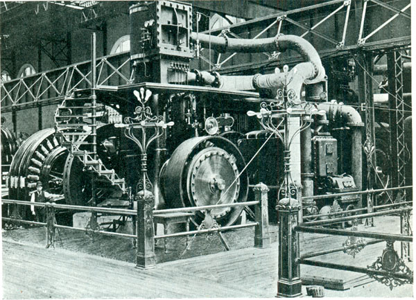
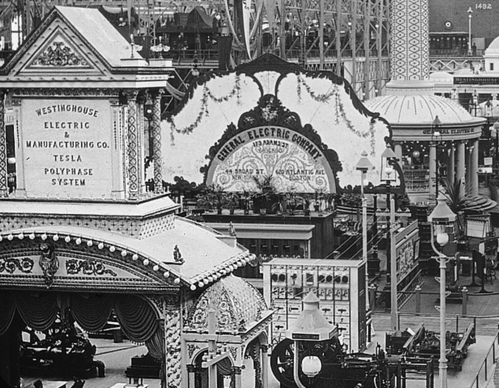
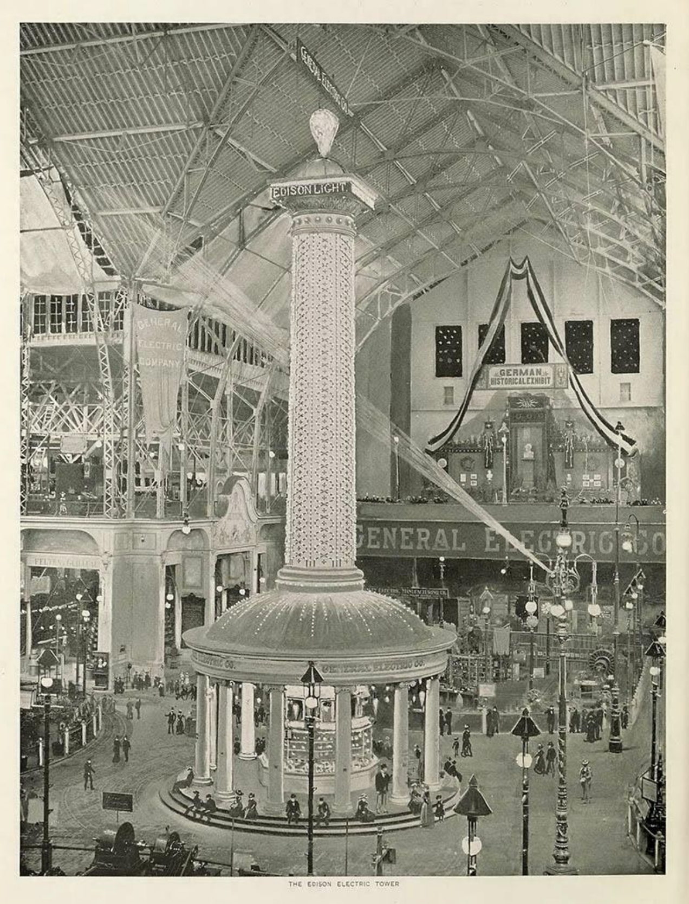
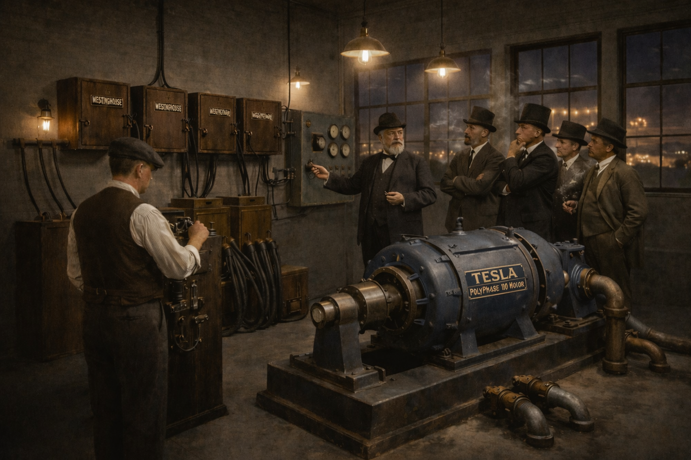
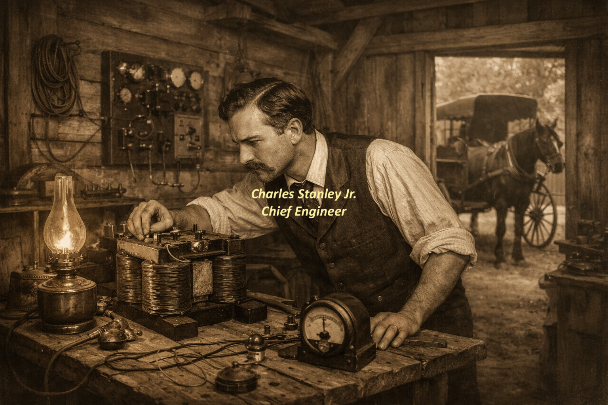
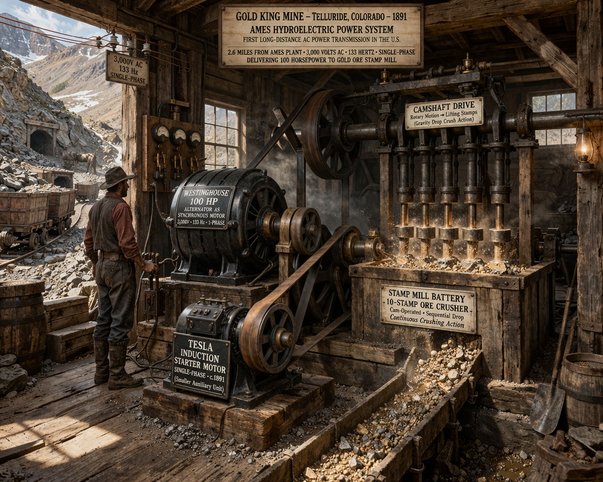
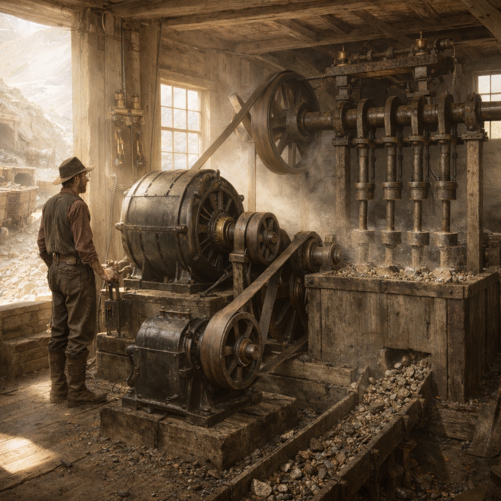
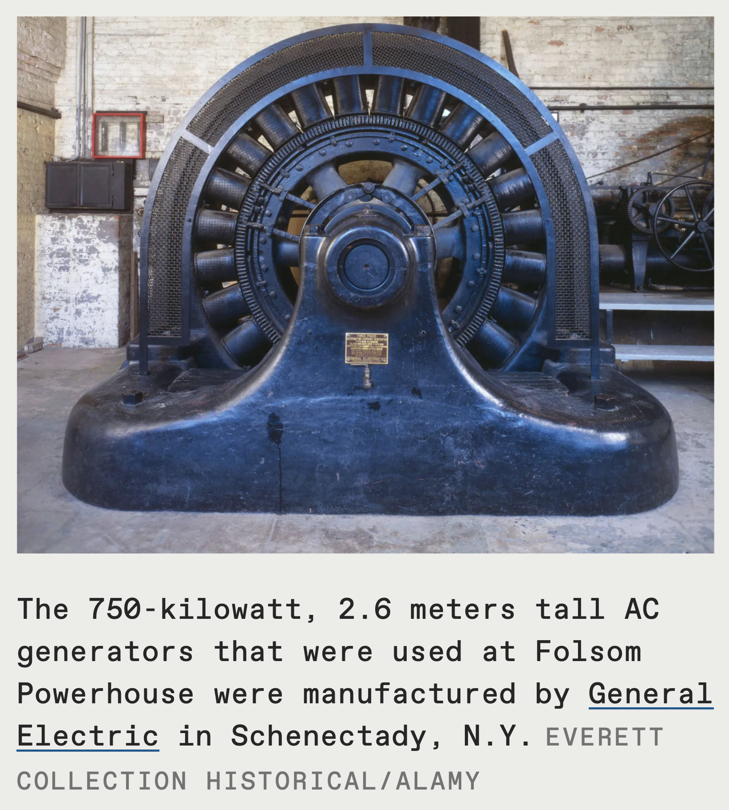

“Nothing is too wonderful to be true, if it be consistent with the laws of nature.”
— Michael Faraday
From Faraday’s first induction experiment to the modern industrial field: how invisible behavior became measurable.
A Three-Layer Causal Timeline
This page is organized into three layers: a Macro Timeline (defining anchors), Category Bands (theme lanes), and Micro Timelines (supporting milestones).
The core arc is simple: discovered field → described field → industrialized field → burdened field → measured and governable field.
Faraday revealed the field.
Maxwell described the field.
Heaviside made the field usable.
Hertz proved the field.
Tesla and the AC era industrialized the field.
Industry then lived inside burden: reactive conflict, harmonics, heat, and instability.
The grid became one of humanity's most complex real-time physical systems: continuously balanced at the speed of physics.
Unity's role is the transition from symptom correction to measured field intelligence and governable operation.
Category bands organize the story by theme; each band contains micro markers with deeper context.
Each micro marker follows one pattern: Scene → Field Insight → Industrial Consequence → Unity Relevance.
Pre-Electromagnetic Induction Discovery: from apprenticeship and scientific access to induction breakthrough.
Induction to Light Bulb: from induction through field-language maturation and the 1879 public-lighting threshold.
AC Industrialization: Gaulard & Gibbs establish the transformer-distribution seed (1881–1883), U.S. demonstrations surface the signal (1884), Westinghouse acquires rights (1885), Stanley operationalizes AC (1886), Frankfurt proves long-distance three-phase viability (1891), Chicago socializes it (1893), Folsom proves municipal-scale 3-phase delivery (July 1895), and Niagara locks in utility-scale AC (1895).
Field Burden Era: harmonic burden, correction practice, and partial instrumentation expand; operations still manage symptoms more than whole-field behavior.
Utility Abstraction Era: measurement makes electricity billable, tariff economics absorb instability, and field behavior is reduced to billing-era proxies.
Measured Field Intelligence Era: from the 2001 MPTS discovery through 2018 diligence alignment, 2019–2023 field deployment proof, and 2024–2026 behavior intelligence with market activation.
👶
Birth of Michael Faraday
1791 · Newington Butts, Surrey (now South London)
What happened: Michael Faraday is born into a working-class family in England.
Why it matters: the future witness of induction begins from humble origins, shaped by discipline, curiosity, and practical craft.
Toward Unity: this marks the first human milestone in the lineage that leads to measurable field intelligence.
📚
Faraday Begins Apprenticeship at George Riebau’s Bookbindery
1805 · Blandford Street, London · Foundation Period
Industrial consequence: Literacy, documentation discipline, and self-directed study habits formed here later translated into repeatable experimental method in electrical science.
Scene: As a teenager, Faraday enters George Riebau’s bookbinding shop and spends years handling scientific texts while learning skilled manual craft.
Field Insight: Technical discovery depends on cognitive infrastructure: reading, note discipline, and patient iterative work before any formal laboratory role.
Unity Relevance: Measured field intelligence starts with disciplined observation culture long before instrumentation hardware appears.
🎟️
William Dance Gives Young Faraday a Lecture Ticket
1812 · Royal Institution Access Catalyst
What happened: William Dance gives young Michael Faraday a ticket to hear Humphry Davy at the Royal Institution.
Why it matters: that single opportunity helps move Faraday from bookbinding into experimental science.
Toward Unity: this small human catalyst begins the chain that leads from induction to modern field intelligence.
1812 ticket reference image — William Dance's access catalyst for young Michael Faraday.
🧪
Faraday Enters the Royal Institution Laboratory
March 1, 1813 · Royal Institution · London
Industrial consequence: Sustained laboratory access established the disciplined experimentation pipeline that later enabled induction-derived machinery and electrical system engineering.
Scene: After the 1812 lecture access breakthrough, Faraday enters the Royal Institution laboratory under Humphry Davy’s recommendation and begins practical scientific apprenticeship.
Field Insight: Continuous laboratory exposure transforms curiosity into method, giving Faraday the environment needed for long-cycle electromagnetic experimentation.
Unity Relevance: Field intelligence begins with disciplined observation culture; this institutional entry is the first operational step in that chain.
🌀
Faraday Demonstrates Electromagnetic Rotation
1821 · Royal Institution · Early Motor Precursor
Industrial consequence: Continuous electromagnetic rotation established the conceptual pathway from field effects to motorized mechanical work at industrial scale.
Scene: Faraday demonstrates continuous rotational motion from electromagnetic interaction, using wire-and-magnet arrangements in a mercury bath setup.
Field Insight: Electrical and magnetic interaction can generate continuous mechanical motion, marking a practical precursor to later motor systems.
Unity Relevance: This milestone links field behavior to machine behavior, a bridge Unity later tracks under real load and distortion.
1821 reference image — Michael Faraday in the electromagnetic rotation era.
Select Image for Details — click any thumbnail to open full view.
📄
Publication-Priority Conflict Follows Rotation Work
1821–1822 · Royal Society Context · Research Constraint Window
Industrial consequence: Scientific progress is shaped by institutional governance and credit structures; social friction can slow technical trajectories long before engineering scale-up.
Scene: After Faraday’s rapid publication on electromagnetic rotation, priority tensions with established figures create professional friction around authorship and sequence.
Field Insight: Breakthroughs do not move on physics alone; legitimacy, publication order, and institutional hierarchy can redirect what gets explored next.
Unity Relevance: Field innovation still requires both technical evidence and operational trust to move from discovery to adoption.
🕯️
Death of Humphry Davy
May 29, 1829 · Transition in Faraday’s Scientific Trajectory
Industrial consequence: Faraday’s increasingly independent direction accelerated the transition from exploratory science to electrical principles industry could later engineer and scale.
Scene: Davy’s death closes Faraday’s mentorship chapter and shifts the center of scientific direction increasingly into Faraday’s own hands.
Field Insight: The experimental program becomes less derivative and more self-directed just before the induction breakthrough window.
Unity Relevance: Scientific continuity matters: institutions open doors, but sustained field progress requires independent operational leadership.
🧲
Faraday Discovers Induction
August 29, 1831 · Royal Institution, London
Industrial consequence: Induction made large-scale electrical generation, transformation, and rotating machinery possible.
Scene: Faraday is 39 and no longer a junior assistant; he is a disciplined experimentalist shaped by nearly two decades at the Royal Institution after entering in 1813 under Humphry Davy. After his 1821 electromagnetic rotation work and Davy’s death in 1829, the induction question is now his own program—and in the 1831 iron-ring work the needle response confirms the breakthrough.
Field Insight: A changing magnetic field produces electrical motion. Electrical behavior is dynamic field response, not only wire transport.
Unity Relevance: Industry still relies on this principle every second, but usually sees energy quantity more than field behavior. Unity makes that hidden behavior observable, interpretable, and governable inside real facilities.
1831 reference image — Michael Faraday at the induction milestone.
Select Image for Details — click any thumbnail to open full view.
👶
Birth of James Clerk Maxwell
June 16, 1831 · About 77 Days Before Faraday's Induction Breakthrough
What happened: James Clerk Maxwell is born in June 1831, in the same year as Faraday's induction breakthrough.
Why it matters: the discoverer of field behavior and the mathematician who formalized it are linked in one historic window.
Toward Unity: Faraday reveals the field, Maxwell gives it equations, and Unity applies both in operations.
👶
Birth of Oliver Heaviside
May 15, 1850 · London, England
What happened: Oliver Heaviside is born in London, later becoming one of the key translators of field equations into practical engineering form.
Why it matters: Heaviside’s vector reformulation and transmission-line work helped make Maxwellian field theory usable for infrastructure-scale electrical systems.
Toward Unity: this bridge from mathematical theory to operational engineering is foundational to modern measured field governance.
🏙️
Chicago World's Fair Establishes AC as Public Standard
Scene: Chicago. The fair opens to the world. Machinery Hall runs large AC generation while Electricity Building explains the system through motors, transformers, and demonstrations. What was debated in labs is now seen by crowds. What engineers proved in Frankfurt, the public accepts in Chicago.
Field Insight: The fair operates as a complete AC chain: generation, transmission, transformation, and utilization at civic scale. The infrastructure is temporary and later dismantled, while permanent city utility systems emerge in the following decade.
Unity Relevance: Once adoption became normal, hidden burden became normal too. Unity makes that burden measurable and governable in live operation.
1893 archive image — Machinery Hall at the World's Columbian Exposition (Field Museum / Illinois Digital Archives).

1893 reference image — Westinghouse dynamo exhibit inside Machinery Hall.

1893 reference image — fair boardwalk with both Westinghouse and General Electric visible.

1893 reference image — GE Light Tower at the World's Columbian Exposition night-lighting display.

1893 reference image — George Westinghouse showing this Electrical Energy business opportunity - Tesla's First Polyphase motor displayed.
Chicago 1893 visual set — Machinery Hall generation, Electricity Building-era demos, boardwalk competition, and night illumination. Select Image for Details — click any thumbnail to open full view.
🧭
Maxwell Extends Faraday's Lines of Force
1855–1856 · On Faraday's Lines of Force
What happened: Maxwell begins rewriting Faraday's lines-of-force into mathematical relationships.
Why it matters: field science starts shifting from observed effects to quantitative structure.
Toward Unity: this bridge creates the path from discovery language toward operational field modeling.
☀️
Carrington Solar Reset (estimated X45+)
September 1, 1859 · Solar Flare Observation and Geomagnetic Storm
What happened: On September 1, 1859, Carrington observes an extreme solar event (commonly cited around estimated X45+, with ongoing debate), followed by a geomagnetic storm that disrupts telegraph networks. On Aug 27, 1859, humans strike crude oil at the Drake well in Pennsylvania.
Why it matters: infrastructure behavior is shown to depend on external field conditions just as the hydrocarbon era begins accelerating industrial load growth.
Toward Unity: this is an early system-level demarcation that field disturbances can reset network behavior while energy intensity rapidly scales.
📐
Maxwell Describes the Field
1862–1864 · London · Physical Lines to Field Equations
Scene: London. Late afternoon. Equations cover the board. He steps back, studying them. Something is beginning to align.
Field Insight: Electricity and magnetism are unified into one field. The behavior of the field becomes mathematical.
Unity Relevance: We built systems from these equations—without measuring the field in operation. Unity closes that gap.
What happened: Maxwell publishes A Treatise on Electricity and Magnetism.
Why it matters: field theory is consolidated for broad scientific and engineering use.
Toward Unity: today's industrial field interpretation inherits this common reference base.
📖
Heaviside Reads Maxwell’s Treatise
1873 · First Examination of the Treatise
What happened: Oliver Heaviside reads Maxwell’s Treatise when it is published and begins deep field study.
Why it matters: this marks the shift from published theory into practical interpretation by the engineer who helps make the field equations operational.
Toward Unity: the discovery → theory → engineering translation chain becomes explicit in this timeline lane.
💡
Edison Files Light Bulb Patent
November 4, 1879 · U.S. Light Bulb Patent Filing
What happened: Edison files the incandescent lamp patent in 1879.
Why it matters: electrification accelerates from experiments into commercial deployment.
Toward Unity: faster deployment increases system complexity and exposes field burden at scale.
🕯️
Death of James Clerk Maxwell
November 5, 1879 · Cambridge, England
What happened: Maxwell dies in November 1879 as early electrification scales up.
Why it matters: the field's chief theorist exits just as industry begins wider rollout.
Toward Unity: his equations remain the core language for understanding electrical behavior.
🔁
Gaulard and Gibbs Establish the Transformer-Distribution AC Seed
1881–1883 · Europe · Primitive but Pivotal AC Architecture
Scene: Gaulard and Gibbs develop and demonstrate their “secondary generator” concept across Europe, proving voltage transformation can be staged for distribution pathways beyond isolated generation.
Field Insight: The concept is flawed in regulation and efficiency, but the system architecture is unmistakable: step-up, transmit, step-down.
Unity Relevance: This is the signal before infrastructure—an imperfect prototype that reveals the field architecture Westinghouse later executes.
🧠
Westinghouse Scans for a Distribution Breakthrough
1883 · System Constraint Recognition
What happened: Westinghouse, already a proven railroad systems builder, actively studies electric distribution limits and identifies DC as non-scalable for long distance.
Why it matters: this is a problem-first moment—he is not chasing a gadget, he is solving infrastructure constraints.
Toward Unity: field transitions happen when constraints are named clearly before solutions are selected.
🌐
Gaulard-Gibbs U.S. Demonstrations Surface the Signal
1884 · Demonstration Era · Engineering Network Activation
What happened: Gaulard and Gibbs demonstrations reach U.S. engineering circles and public technical venues.
Why it matters: the concept’s flaws are visible, but so is the breakthrough implication: voltage transformation enables distance.
Toward Unity: this is the bridge from idea visibility to strategic adoption.
📜
Westinghouse Acquires U.S. Rights
1885 · Decision Point · Architecture over Device
What happened: Westinghouse acquires the U.S. rights to the Gaulard-Gibbs system and commits capital/talent to execution.
Why it matters: the acquisition is strategic—rights are purchased for distribution architecture potential, not current device quality.
Toward Unity: this locks the transition from invention signal to industrial implementation, setting up Stanley’s 1886 breakthrough.
👨🔧
William Stanley Jr. — First Practical AC Field
March 20, 1886 · Great Barrington, Massachusetts
What happened: William Stanley Jr. demonstrates practical AC distribution in Great Barrington.
Why it matters: AC moves from concept to repeatable utility operation.
Toward Unity: this is a key step into real-world field operations.

1886 reference image — William Stanley Jr. and the first practical AC field system in Great Barrington.1886 reference image — Stanley operating early AC equipment during the Great Barrington rollout period.
Select Image for Details — click any thumbnail to open full view.
What happened: practical three-phase motor architecture matures for industrial use.
Why it matters: AC scales from demonstration into heavy mechanical work.
Toward Unity: this expands the operating field environment where burden later accumulates.
⚙️
Westinghouse Secures Tesla Polyphase Motor Patents
1888 · Polyphase AC Patent Platform
What happened: Westinghouse secures Tesla's polyphase motor patents for industrial deployment.
Why it matters: AC machinery pathways accelerate at commercial scale.
Toward Unity: this strengthens the infrastructure context Unity now measures and optimizes.
🏔️
Ames Powers Gold King with Long-Distance AC
July 19, 1891 · Telluride Region, Colorado · 3,000V over about 2.5 miles
What happened: long-distance AC powers remote industrial work at Gold King.
Why it matters: AC proves it can run real industrial operations over distance.
Toward Unity: this marks the point where persistent field burden becomes an operational issue.

Gold King Mine reference image — 1891 AC electrical energy powers begin.

Ames reference image — July 19, 1891 · 100 HP single-phase AC installation context.
Select Image for Details — click any thumbnail to open full view.
🏛️
Frankfurt Electricity Exhibition Demonstrates 3-Phase Transfer
August 28, 1891 · International Electrotechnical Exhibition · Frankfurt, Germany
Scene: Frankfurt. Late summer, 1891. Crowds gather around unfamiliar machines. Three-phase power runs over distance and drives real loads. The field leaves theory and enters public proof.
Field Insight: Long-distance three-phase transmission and motor drive are demonstrated in one operating system. AC architecture proves scalable beyond isolated experiments.
Unity Relevance: Frankfurt is the proof moment that made industrial confidence possible. Unity extends that legacy by turning field behavior into real-time operational intelligence.
Select Image for Details — click any thumbnail to open full view.
🏢
General Electric Is Formed
1892 · Edison General Electric + Thomson-Houston Merger
What happened: Edison General Electric and Thomson-Houston merge to form General Electric.
Why it matters: manufacturing, deployment, and standardization capacity grow quickly.
Toward Unity: this scale-up expands the systems where field burden and measurement needs increase.
🧮
Watt-Hour Metering Makes Electricity Billable
1890s · Thomson-Era Meter Standardization
Scene: Utilities move from flat-rate approximations to meter-based accounting. Consumption can now be measured, compared, and invoiced with consistent structure across customers.
Field Insight: Metering collapses complex behavior into one billable scalar: kWh delivered. Phase angle, VAR flow, and harmonic condition remain mostly outside the commercial record.
Unity Relevance: Metering solved billing transparency, not field transparency. Unity extends observability into the behavioral layer the meter never captured.
Industrial meter reference image — General Electric Thomson Recording Wattmeter, c. 1901 (The Henry Ford).Residential-era meter reference image — Thomson-Houston Recording Wattmeter, c. 1889 (The Henry Ford).Museum detail image — Thomson Watthour Meter Type CS, front and profile views (Edmonton Power Historical Foundation).Glass-case reference image — Thomson Watthour Meter Type CS in enclosed housing.
Select Image for Details — click any thumbnail to open full view.
🏞️
Folsom Powerhouse Delivers Long-Distance 3-Phase AC to Sacramento
July 13, 1895 · Folsom to Sacramento · 11,000V over 22 miles
Scene: At Folsom, GE-built three-phase generators start service and the output is stepped from about 800V to 11,000V for transmission to Sacramento over 22 miles. The plant entered operation in July 1895 with four 750-kW generator units (about 3 MW installed total).
Field Insight: Folsom demonstrated early municipal/industrial-scale high-voltage AC transfer from hydro generation to city loads. ASCE later classified it as the second U.S. long-distance, high-voltage, three-phase transmission system (after Mill Creek No. 1).
Unity Relevance: Once distance transmission and urban load coupling scaled, hidden field burden scaled with it. Unity extends this lineage by making live field behavior measurable and governable.

Folsom reference image — first 750 kVA generator at the 1895 powerhouse.
Select Image for Details — click any thumbnail to open full view.
🌊
Niagara Falls AC Station Commissioned
1895 · Niagara Falls, New York
Scene: Niagara Falls. Turbines turn and transmission flows. Power leaves the station and feeds industry. The AC era stops being provisional. By Niagara, AC is no longer an experiment—it is the chosen infrastructure.
Field Insight: Utility-scale AC generation and transmission enter durable service. After Niagara, there is no competing system—only expansion.
Unity Relevance: That permanence locked in long-term reactive burden at scale. Unity is the next frame: measured, interpretable, governable field operation.
Niagara Adams station exterior reference image — historic HABS/Library of Congress view of the 1895 complex.Niagara generator hall reference image — Westinghouse generators at the Adams station.
Select Image for Details — click any thumbnail to open full view.
🧾
Insull Era Utility Buildout and Billing Pivot
Late 1890s–Early 1900s · Chicago Utility Operations
Scene: Large urban utilities consolidate generation, transmission, and distribution into managed central-station systems. Load aggregation becomes the lever for financing expansion and rate strategy.
Field Insight: Demand charges and load-factor tariffs respond to peak volatility, low utilization, and customer diversity. Reactive behavior is an underlying physical driver, but the era's tariff language is economic rather than field-explicit.
Unity Relevance: Utilities stabilize revenue by pricing around uncertainty because the field itself is not continuously interpreted. Unity closes that blind spot with direct field observability and governable response.
🧯
Correction and Instrumentation Era Opens
Early 20th Century · Motor-Heavy Industrial Environments
What happened: plants adopt correction devices and instrumentation in motor-heavy environments.
Why it matters: operators can treat symptoms, but still lack full-system field understanding.
Toward Unity: this begins the long correction-first era before intelligence-driven operations.
🌀
Rogowski-Coil Current Sensing Enters the Field Era
1910s (Definitive Publication in 1912) · Walter Rogowski / W. Steinhaus
What happened: Rogowski-coil AC current sensing emerges and is formally documented in 1912.
Why it matters: dynamic current behavior can be measured with better fidelity.
Toward Unity: improved sensing is a direct precursor to modern field intelligence.
🏛️
Federal Power Commission Establishes Early U.S. Oversight
1920 · Federal Water Power Act / Federal Power Commission
Scene: Interstate hydro development and regional power buildout require federal coordination beyond city-by-city franchise logic.
Field Insight: Governance shifts from purely local utility discretion toward formal oversight frameworks for interconnected power systems. This federal lineage later evolves into modern FPC/FERC-era market structure.
Unity Relevance: Regulation structures markets, but still depends on limited field visibility. Unity adds operational truth at the waveform and behavior layer.
🏙️
Reactive Management Becomes Standard Utility Practice
Mid-20th Century · Utility and Plant Correction Programs
What happened: utilities and plants normalize reactive correction programs at scale.
Why it matters: symptom management and kWh-centric accounting improve operations, but root-cause field behavior remains less visible.
Toward Unity: this defines the long correction era before measured, governed field intelligence.
📟
Digital Metering Begins Exposing Dynamic Behavior
Late-20th Century · Power Quality Instrumentation Expands
What happened: digital metering and power-quality instrumentation spread across facilities.
Why it matters: visibility improves, but interpretation remains fragmented.
Toward Unity: this prepares the transition from raw readings to governable field intelligence.
🧪
MPTS — Maximum Power Transfer Solution (AC) Emerges
2001 · AC Field Solution Discovery
What happened: MPTS is identified as a practical AC field-harmonization pathway at industrial voltage.
Why it matters: industry gains a route beyond correction-only economics into behavior-level understanding.
Toward Unity: this discovery becomes the seed that later connects reactive burden, billing impact, and governable field intelligence.
🗂️
MPTS Due Diligence Begins
Mar 2018 · MPTS Validation and Commercial Readiness Review
What happened: founder-led due diligence begins to validate MPTS performance, deployment viability, and operational fit.
Why it matters: the discovery is explicitly connected to industrial reactive-energy burden, billing friction, and measurable outcomes.
Toward Unity: this is where technical discovery becomes a disciplined modernization program.
🏢
Avco Business Center (Wilshire Boulevard) — MPTS Commercial Application (3x H240's)
Aug 2019 · Avco Business Center · Multi-Unit Commercial Showcase Deployment
What happened: the Avco Business Center on Wilshire Boulevard deploys three H240 units as an early commercial showcase.
Why it matters: this first multi-unit commercial configuration delivered critical field learning and demonstrated practical scalability.
Toward Unity: Avco’s measured outcomes connected due diligence to repeatable real-world deployment strategy.
Avco Business Center (Wilshire Boulevard), 2019 — early commercial showcase deployment with 3 H240 units.
🏬
MPTS Commercial Application (1x H240)
Dec 2019 · Follow-On Commercial Deployment
What happened: a follow-on commercial site deploys one H240 unit.
Why it matters: repeat deployment confirms continuity beyond one-off testing.
Toward Unity: replicability strengthens confidence for broader industrial progression.
⚡
Unity Energy Is Formed
Feb 2020 · Unity Energy Company Formation
What happened: Unity Energy is formally established to carry MPTS from proof work into a durable operating mission.
Why it matters: the field story moves from isolated deployments into organized execution, education, and replication.
Toward Unity: this creates the institutional base for long-cycle measured field intelligence.
Oct 2021 · Industrial Deployment with Dual H490 Units
What happened: an industrial site deploys two H490 units.
Why it matters: higher-capacity deployment confirms heavier-duty viability.
Toward Unity: industrial confidence is essential for broad field intelligence adoption.
🧰
MPTS Industrial Application (1x H240)
May 2023 · Incremental Industrial Deployment
What happened: another industrial site deploys one H240 unit.
Why it matters: continued deployment keeps the implementation sequence active and grounded in operations.
Toward Unity: continuity improves before/after comparison quality.
👁️
Field Visualization Milestone
Sep 2023 · Field Visualization Operationalized
What happened: field visualization workflows are formalized for recurring operational use.
Why it matters: teams gain shared, faster visibility into burden and harmonization behavior.
Toward Unity: visualization becomes the daily interface for interpretation and decisions.
What happened: behavior-modeling capabilities expand across measured field signatures and operational profiles.
Why it matters: teams can move from after-the-fact correction toward forecasted decisions and controlled response.
Toward Unity: modeling translates waveform truth into governable plant behavior.
What happened: data pipelines and analytics layers are optimized for cross-site field decision support.
Why it matters: cleaner, aligned data increases confidence, speed, and repeatability of operational recommendations.
Toward Unity: reliable data operations make intelligent field governance scalable.
🧭
Web Portal Development, Education, and Market Expansion
2026 · Portal Development/Education, Capital Raise, and Investor/Customer Marketing
What happened: Unity expands portal capabilities, educational delivery, capital formation, and investor/customer market programs.
Why it matters: the model matures from technical proof into visible market execution.
Toward Unity: measured field intelligence becomes a living public operating framework, not just an internal engineering method.

")
")
")